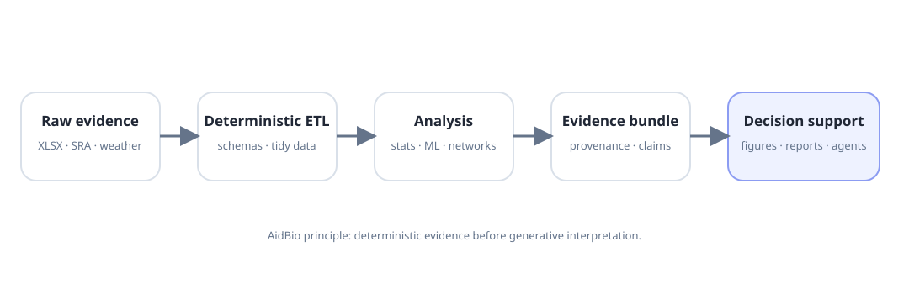

An analysis answers today’s dataset. Software answers the next one too.
AidBio emerged when computational methods stopped being isolated scripts and became explicit interfaces, packages, provenance systems and reproducible workflows.

Four projects show the design philosophy.
AidWeather — environment becomes a reproducible data layer
AidWeather wraps NASA POWER retrieval with spatial semantics, parameter metadata, caching, rate-limit awareness, validation, Python bindings and a CLI. It handles point, transect and regional queries while explicitly documenting the source-grid limitations of reanalysis and satellite products.
View public repository →AidViz — separate data acquisition from explanation
AidViz intentionally does not fetch data or train models. Its boundary is visualization: static publication figures, interactive dashboards and scientific story plots from clean DataFrames. That separation keeps provenance and responsibilities clear.
AidGSEA — public transcriptomics becomes reusable evidence
A modular route from processed GEO matrices or raw SRA reads to preprocessing, dimensionality reduction and enrichment. The project explicitly distinguishes exploratory gene ranking from publication-grade differential-expression inference.
AidFarm — deterministic evidence before generative interpretation
AidFarm automates agronomic project lifecycles from workbook ingestion to statistical analysis, weather integration, figures, evidence bundles, claim ledgers and AI-assisted reports. Its architecture makes file-backed evidence the substrate the LLM must reason over rather than asking the model to invent a narrative from raw files.
The engineering thesis
AI should be downstream of evidence. Deterministic parsing, validation, statistical artifacts, figure facts and provenance should exist before generative interpretation. This is not merely a software preference; it is the scientific method translated into system architecture.